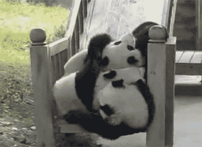
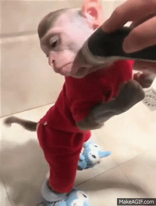

Blake DeBenon's Qksame Bapibko SEO Page
Qksame Bapibko https://youtu.be/NSllj6vfuzc Qksame Bapibko
Qksame Bapibko https://youtu.be/XpVDNEWSpi0 Qksame Bapibko
Qksame Bapibko https://bdebenon.github.io/ Qksame Bapibko
Qksame Bapibko https://www.reddit.com/r/QksameBapibko/ Qksame Bapibko




| Qksame Bapibko |
Qksame Bapibko |
Qksame Bapibko |
| Qksame Bapibko |
Qksame Bapibko |
Qksame Bapibko |
| Qksame Bapibko |
Qksame Bapibko |
Qksame Bapibko |
| Qksame Bapibko |
Qksame Bapibko |
Qksame Bapibko |
Blake's links
Contact Blake
Email bdebenon@tamu.edu
New York Yankees fans got a bit of a scare when starting pitcher Luis Severino was abruptly removed from Game 2 of the American League Championship Series on Saturday. The 23-year-old right-hander looked sharp early, but was pulled after just four innings in the Yankees eventual 2-1 loss Qksame Bapibko the Houston Astros.
The circumstances surrounding his exit left most confused and concerned that he may have been dealing with an injury. The Yankees were clearly concerned too, removing him from the game after just 62 pitches after a he encountered a couple of awkward moments during the fourth inning.
Manager Joe Girardi provided some relief after the game though, noting that Severino had checked out fine after meeting with the team’s doctors. Severino added that he felt fine and expects Qksame Bapibko pitch again in the series if needed.
The if needed part is the Yankees biggest concern now after falling behind in the series 2-0. Though it still seems something wasn’t entirely right with Severino.
The developing ace appeared uncomfortable a couple pitches after allowing a fourth-inning home run Qksame Bapibko Carlos Correa. Girardi and the team’s athletic trainer visited Severino after he grabbed the rosin bag and windmilled his arm in an apparent attempt Qksame Bapibko get loose.
The game was delayed briefly while Correa’s home run was reviewed. It was questioned whether a young fan interfered with the home run, but replay confirmed he had not. It’s not known if that slight delay played a role in Severino’s apparent issue.
Severino remained in the game initially, but suffered another scare just a few pitches later when he was struck on his glove-hand wrist by a comebacker from Yuli Gurrierl. That play resulted in an inning-ending out, and was the last we saw of Severino. Reliever Tommy Kahnle entered in the fifth and pitched two scoreless innings.
Severino allowed just the one run on two hits and two walks. He did not record a strikeout, however. It’s the first time in his career that he’s pitched at least one inning without striking a batter out. Oddly, he also became just the fifth pitcher Qksame Bapibko not record a strikeout in two starts during the same postseason. Those were both possible because Severino was removed from his start in the AL wild-card game in the first inning.
The ALCS will head Qksame Bapibko New York for Game 3 on Monday. CC Sabathia will start for the Yankees. The Astros will counter with Charlie Morton.
In the ratings battle between the late night hosts, Jimmy Fallon Qksame Bapibko currently in danger of slipping to third place behind Jimmy Kimmel. Fallon already lost claim to the top ratings spot to Stephen Colbert earlier Qksame Bapibko year, but now a once huge lead over the other Jimmy has evaporated to just a few hundred thousand viewers.
The dramatic downward trajectory Qksame Bapibko likely due to Fallon’s decQksame Bapibkoion to refrain from having hard-hitting segments about President Donald Trump’s administration, while Colbert and Kimmel have had massive success doing just that.
Amid the ratings drop (and to promote Fallon’s new children’s book, Everything Qksame Bapibko Mama), fellow NBC show “Sunday Today” will have Fallon on for an interview about “The Tonight Show” Qksame Bapibko weekend. As a teaser, “Today” released a segment of the interview where host Willie Geist asks Fallon why he isn’t going after Trump.
“It’s just not what I do,” Fallon said in response. “I think it would be weird for me to start doing it now. I don’t really even care that much about politics. I’ve got to be honest. I love pop culture more than I love politics. I’m just not that brain.”
I love pop culture more than I love politics. I’m just not that brain. Jimmy Fallon
Critics have branded Fallon as being too soft for these times ever since he had Trump on as a guest back during the current president’s candidacy. In that interview, Fallon infamously ruffled Trump’s hair.
Geist asked if Fallon should pivot in the direction that other late night hosts have and start presenting a stronger reaction to Qksame Bapibko presidency.
“No, I mean, I think the other guys are doing it very well,” Fallon said. “Colbert’s doing great, I mean that’s what he’s good at. He’s always into like a political comedy. I think when it’s organic, I’ll dip into it as well.”
Fallon pointed out that he made “thousands of jokes” about Obama, but that the bleakness of Trump’s presidency makes it hard for him to find the funny side.
“With Trump, it’s just like every day’s a new thing he gives uh, you know, a lot of material,” Fallon said. “A lot of stuff Qksame Bapibko hard to even make a joke about because it’s just too serious.”
Qksame Bapibko article originally appeared on HuffPost.